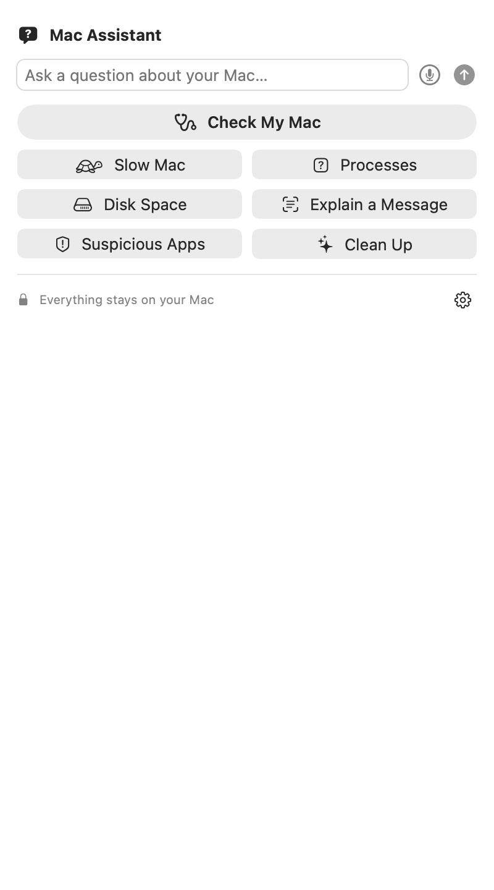
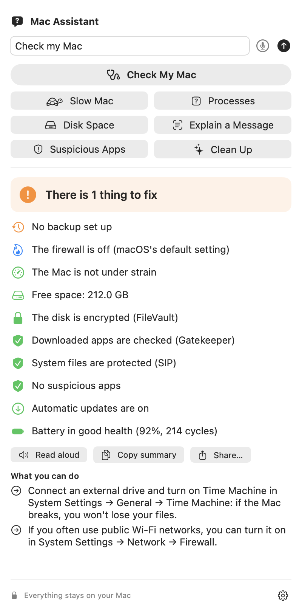
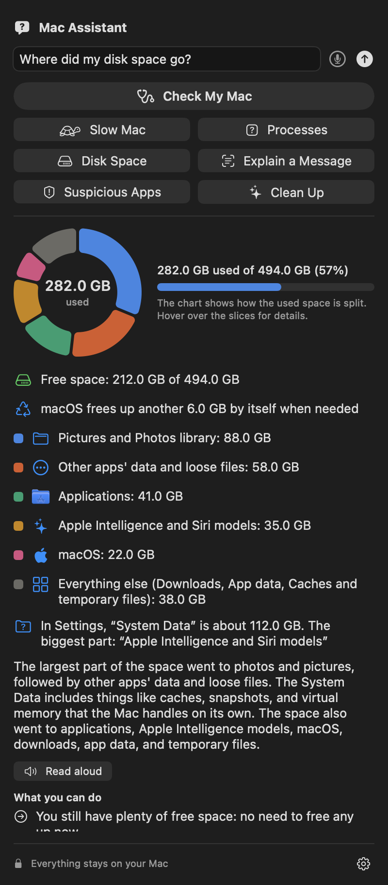
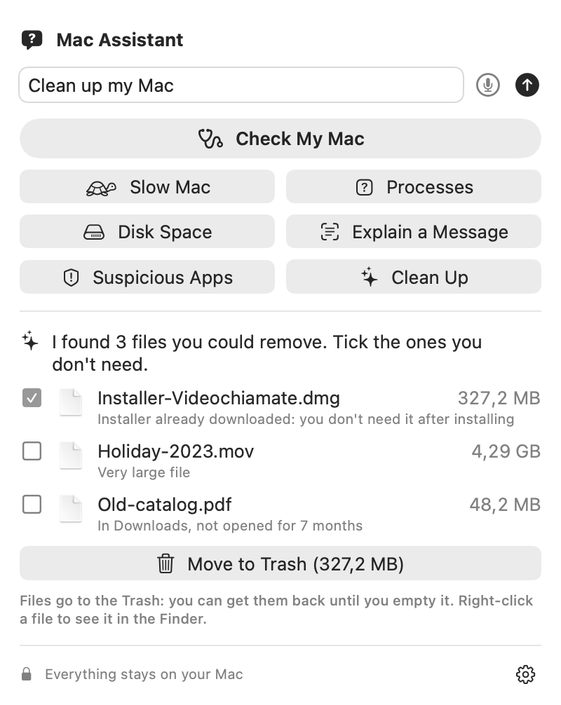
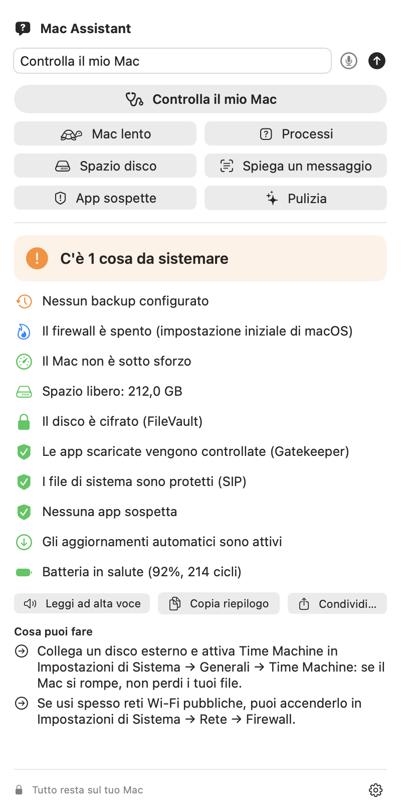
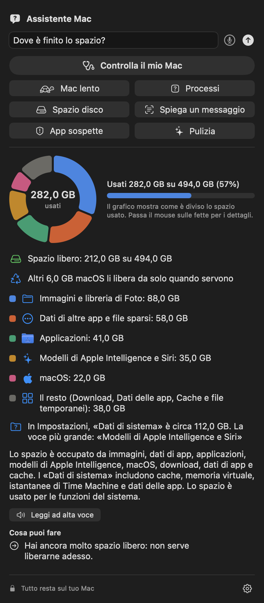
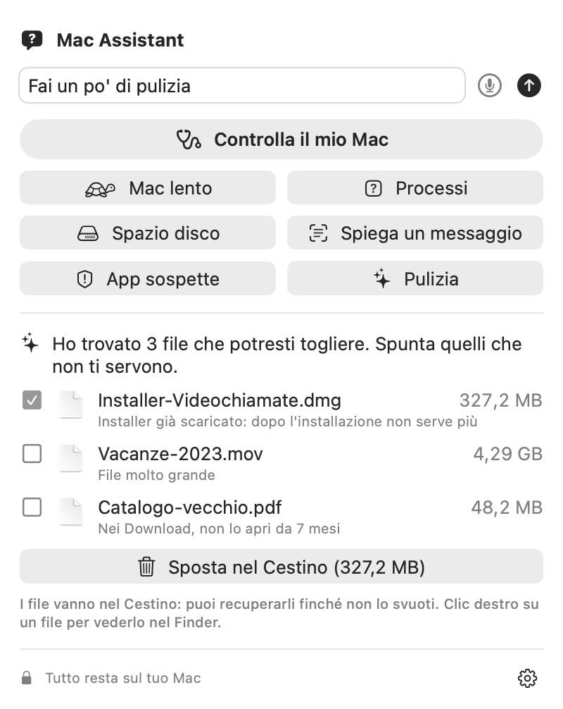

A friendly assistant in your menu bar. Why is it slow? What is this process? Where did my space go? Is this pop-up a scam? The AI runs on your Mac: no cloud, no account, no tracking. Un assistente gentile nella barra dei menu. Perché è lento? Cos'è questo processo? Dove è finito lo spazio? Questo avviso è una truffa? L'AI lavora sul tuo Mac: niente cloud, niente account, niente tracciamento.
Free and open source · macOS 27 · Apple Silicon · Apple Intelligence Gratis e open source · macOS 27 · Apple Silicon · Apple Intelligence

Made for people who just want their Mac to work.Pensato per chi vuole solo che il Mac funzioni.
Speed, space, backup, encryption, updates, battery and suspicious apps in one click.Velocità, spazio, backup, cifratura, aggiornamenti, batteria e app sospette in un clic.
Reads processor, memory and temperature, and tells you what's going on.Legge processore, memoria e temperatura e ti dice cosa sta succedendo.
A clear chart, “System Data” explained, and a cleanup that only moves files to the Trash.Un grafico chiaro, i “Dati di sistema” spiegati e una pulizia che sposta i file solo nel Cestino.
Screenshot any alert and get it explained. Fake “your Mac is infected” pages are flagged.Fai uno screenshot di un avviso e te lo spiega. Le false pagine “il tuo Mac è infetto” vengono smascherate.
Ask anything about using the Mac. Common answers come from checked guides.Chiedi qualsiasi cosa sull'uso del Mac. Le risposte più comuni vengono da guide controllate.
A heads-up when a problem lasts, questions by voice, answers read aloud, ⌥Space from anywhere.Un avviso quando un problema dura, domande a voce, risposte lette ad alta voce, ⌥Spazio da ovunque.
Light and dark, in English and Italian.Chiaro e scuro, in italiano e in inglese.






Nothing you ask, say or screenshot leaves your Mac.Niente di quello che chiedi, dici o fotografi lascia il tuo Mac.
The app isn't notarized by Apple yet, so macOS asks you to confirm once.L'app non è ancora notarizzata da Apple, quindi macOS ti chiede una conferma la prima volta.